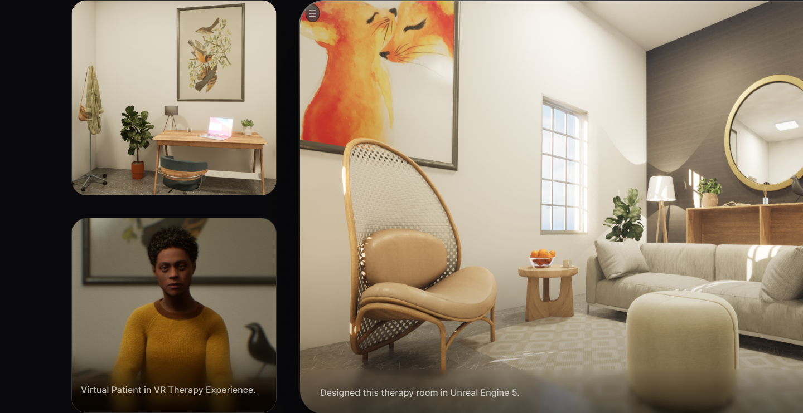
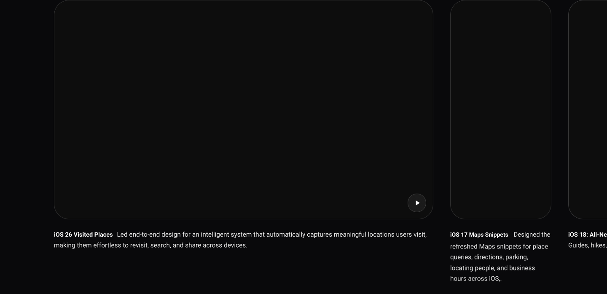
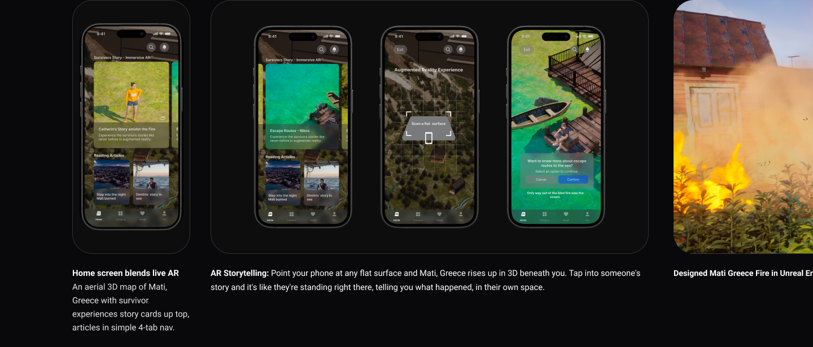
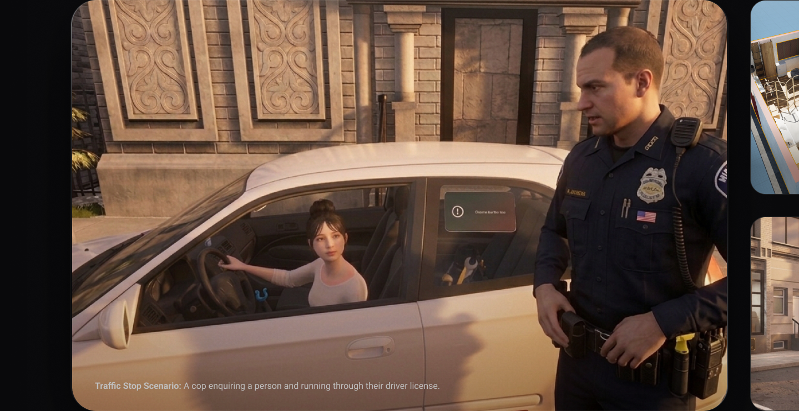

Virtual Insomnia Patient - VR Therapy Experience
Designed a VR Therapy Experience and Clinical Feedback Loop framework, turning high-stakes therapy sessions into measurable growth. A glimpse of what’s shaping how new therapists train — more in development.

AR Guided Vascular Access
Designed to turn a patient’s own vascular imaging into real-time, on-body guidance for safer self-cannulation. Sole designer on a $500K+ R&D initiative; more of this work is still taking shape behind the scenes.

AR Journalism App - Mati Greece Fire
An experimental AR journalism app bringing news into the real world. It overlays contextual data, multimedia, and interactive stories onto real-world scenes for a more immersive, spatial experience.

NextGen Badge - VR Police Training Simulation
A scenario-driven VR training experience built around spatial interaction, realistic 3D environments, and real-time decision-making for high-pressure police training scenarios.
